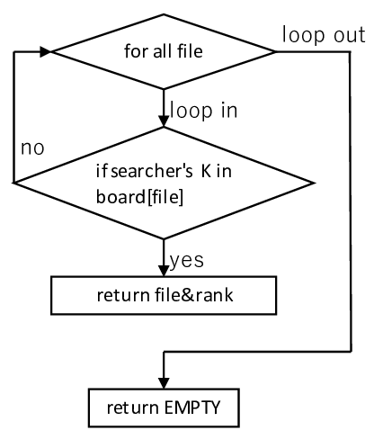
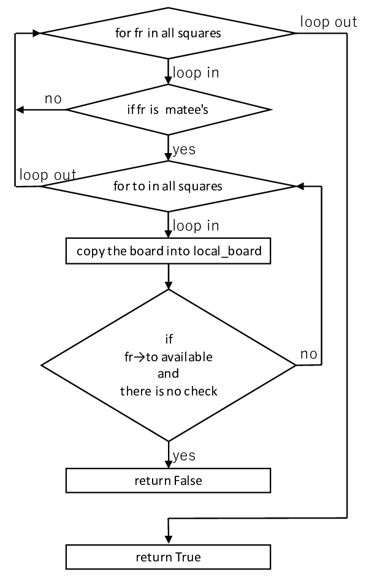

Stage 5 勝敗を判定する
Stage 4 まででチェスのゲームを作るにあたり、なくてはならない機能はすべて揃いました。これからはよりゲームらしく、より生き生きとしたものを作ります。そこ、「コマンドでやってる時点で殺伐としてるとか」言わない。
目次
5-1 キングの位置
2-3 で確認しましたが、チェスにおいて勝敗のつき方は 4 通り、キングを取られる・チェックメイト・ステイルメイト・リザインのいずれかでしたね。このうち前 3 つはどれもキングの存在がカギを握っています。またチェックもキングがいてこそです。何せチェックというのは「相手のキングのいるマスへ駒を動かせる状態」ですから。
そんなわけで Stage 5 においてキングの位置というのはこれ以上ない重要事項です。まあいつも通り簡単にコーディングできますけどね。Board クラスの move メソッド直下に king_place といういかにもな名前のメソッドがあるじゃないですか。そいつを追っていきます。見たまんまです。引数の searcher はキングを探してるプレーヤーの番号です。全部のマス調べ上げてプレーヤーのキングがあればその座標を、キングがどこにもなければ EMPTY をリターンしています。
このマスの調べ方は少し独特かもしれませんが、リストの構造を考えれば大したことはないでしょう。外側のインデックスが file を、内側のインデックスが rank を表しますから、

- すべての file をみる
- もしリスト board[fil] に searcher のキングがいたら
- file と board[fil] のキングがいるインデックス (=rank) をリターンする
というアルゴリズムで運用しています。
5-2 チェックの数
お次はチェックの判定です。まあ判定と呼ぶくらいですからチェックの有無を True / False でリターンするメソッドかけば事足りるんですが、ダブルチェックとかトリプルチェックという表し方がチェスの棋譜にはありまして、それを見据えて何ヶ所でチェックされているかをリターンする機能が欲しいなと。
それが checkcounter メソッドです。引数の checkee は
チェックを受けている
プレーヤー番号です。間違えないでください。しっかりわかるようにあえてこの名前をつけたんですから。
まずは checkee のキングを探します。motionjudge に通して相手の駒がたどり着けるか検証するという意図ももちろんありますけれども、そもそもキングがいなければ相手はチェックのしようがないので「キングがいるか」も同時に見ています。もしキングがいない (king_place が EMPTY) であれば TO の型は list ではなく int になりますから、try 文の中でエラーを起こして except へ入り False をリターンする仕組みになっています。
キングがいる場合は try 文内で toFILE, toRANK にキングの座標を入れ、for 文によって盤面上すべての相手の駒の座標を frFILE, frRANK の中に入れ motionjudge を実行します。もし motionjudge が True をリターンすればチェックしていることになりますから、カウンター count の値を増やしてあげましょう。
ループを抜けたら count をリターンします。つまりチェックされている回数が返されます。もしチェックされていなければ
リターンは 0
です。False ではないことに注意してください。
5-3 チェックメイト
「できればチェックメイトで勝ちたい。あわよくば『チェックメイトです!!』と言わせてみたい」チェスのゲームをやる人はみんなこういう頭をしています。その期待に応えてあげるのがゲームデザイナーの役目じゃないですか。応えてあげましょうよ。ということでチェックメイトを判別する機能をこしらえます。それが Board クラスの checkmatejudge メソッドになります。引数の matee はチェックメイト
される側
のプレーヤーです。お間違えなきよう。
チェックメイトというのは「すでにチェックされていて、どの駒をどのように動かしてもチェックを逃れられない」状況ですよね。ですからメソッドの一番上ではチェックされていない状況に対して False をリターンしています。
ここから先のフローチャートを先に上げておきます。確認してください。こんなものまで用意してる私って結構良心的でしょ。あ、また傲慢なこと言った。
4 重の for ループは「matee のすべての駒の正しい動かし方」をシラミつぶしに見ていることを意味します。まず外側の 2 つで移動元となるマスをおさえます。それが matee の駒であれば、次の 2 重 for ループで駒の移動先をシラミつぶしに探します。
さて、移動元と移動先の候補が出揃いました。プログラムする人間の心理としては、「現状の self から駒を動かしてチェックを回避できるか見てみたい」と思っています。ですが一度駒を動かしてしまうと再び元の状態に戻せない以上、この Board のインスタンス(クラスのオブジェクト)に手をつけて駒を動かすのは禁忌です。言い換えると、このループの内側では
- self を完璧に再現して駒を動かしてみたい
- self 自体を触ることは許されない
というジレンマを抱えています。そこで local_board という、self を完コピした、まったく新しいインスタンス作ります。「モノホンが傷つくといけないから影武者に危険地帯を歩かせる」といったところでしょうか。
実際、local_board を宣言したあとに local_board.move を発動して駒を動かします。当然のことながら移動元と移動先は for ループのパラメーターどおりです。ここで local_board について、
- move から True (移動成功)
- checkcounter から 0 (チェックされていない)
が得られれば「移動してチェックを回避できる」という意味になりますから、チェックメイトではないということになります。False をリターンしてください。
一方でループを抜けきってしまいますと、「どのように動かしてもチェックを免れることはできない」ということになってしまいますので、「チェックメイト」を表す True をリターンしましょう。
5-4 ステイルメイト
決着のつき方その 3, ステイルメイトです。stalematejudge メソッドで判別します。相変わらず引数の matee は「ステイルメイトされる側」つまり動けなくなってしまったか確認したい方のプレーヤー番号です。もう強調しなくていいでしょ？しましょうか？
される側
もう大丈夫ですね。
やることはほぼほぼチェックメイトと変わりません。唯一の違いは、「現状でチェックを受けていない」ことです。メソッドの先頭ではそれを調べています。もし checkcounter が 0 でも False でもなければそれは間違いなくチェックされている状況ですから、ステイルメイトとは言えません。
この第一関門を突破したものだけが次なるステップへ進むことができます。4 重の for ループです。そう、5-3 のチェックメイトとまったく同じことをします。コピペでいいですよ、コピペで。え？「てめーのコードじゃ書いてることチゲー」って？気のせいですよ。ほんとに気のせいです。いや、マジで。嘘だと思うならコピペして動かしてみなさいって。
次回予告
さあ、勝敗の判定がつきました。一応ご自分のコードがしっかり作動するかテストしてみてください。あんまり後になってバグると「このクソ長いコードからバグ見つけんのかよ」と絶望に打ちひしがれることになりますので、ぜひ今のうちに。あの絶望は何度やってもダメですね。ろくなもんじゃない
次回はプレーヤーの入力をあつかっていきます。2-2 で決めたように、このゲームはプレーヤーに棋譜の書き方で駒を動かしてもらいます。今一度書き方を復習しておいてください。次回はこの棋譜の書き方から盤面を動かせるようにします。
加えて文字列操作と正規表現も使います。まあ正規表現は知らないと何もできないかと言われるとそうでもないんですが、非常に便利なテクニックですからこの際使いこなせるようになっておいたらいいんじゃないですか。